Nothing leaves your Mac
No account, telemetry or server. Agent tracking and shared memory read the files Claude Code and Codex already write.
Α Ι · Σ Υ Σ Τ Η Μ Α
The macOS terminal where your coding agents are the main characters.
Run Claude Code, Codex and friends the way you already do — and watch them work, live. A fork of Ghostty, the fast native terminal.
curl -fsSL https://raw.githubusercontent.com/steventsvik/GhosttyEXTREME/custom/install.sh | bash
FEATURE SELECT
Twenty of them, each built for running agents. Hover to preview. Click for the full details. Every one can be switched off in Settings, where it does no background work at all.
STORY MODE
Five chapters: the turn, the footprint, the rules, the matchup, the start. The scroll wheel is the controller.
CHAPTER 1 · THE TURN
CHAPTER 2 · FEATHERWEIGHT
CHAPTER 3 · HOUSE RULES
You prompt, it begins. The card shows the task, a working status and a timer — and a snapshot of your project is saved, so the whole turn can be undone.
It reads a file. The editor opens it at the lines the agent read, and the file lights up cyan on the code map.
It edits. The change types itself in with green gutter marks, the Claude cursor shows where it is, and the turn’s diff count goes up.
It needs you. The card turns amber with Allow and Deny — on the card, in Mission Control, and in a notification you can answer from.
It verifies. Commands and test runs stream into the timeline, sub-agents included.
Done — review it. The changes land in an inbox with the full diff. Not what you wanted? Undo puts every file back.
1 agent working
1.4% CPU
All of the sidebar’s animation runs in Core Animation, and anything you can’t see pauses — background tabs, hidden and minimized windows. Measured on an Apple silicon MacBook. This page plays by the same rules: every loop stops when it leaves your screen.
No account, telemetry or server. Agent tracking and shared memory read the files Claude Code and Codex already write.
Agent status arrives as escape sequences any printed text could imitate — so each launch creates a secret only its own terminals and hooks know. Events without it are ignored.
The Backend view runs your providers’ own CLIs with their existing logins, read-only commands only. It reads the names of your env variables, never their values.
It can only show its own pages, and Visual Fix only talks to your local dev server.
NO ACCOUNT · NO TELEMETRY · NO NEW DOORS
CHAPTER 4 · VS MODE
GhosttyEXTREME is for watching and steering the CLI agents you already use. If you want a terminal or editor with its own built-in AI, Warp or Zed may suit you better.
| What matters | GhosttyEXTREME | Ghostty | cmux | Warp | Zed |
|---|---|---|---|---|---|
| Runs Claude Code, Codex & co. unchanged | Yes | Yes | Yes | Yes | In its terminal; also via ACP |
| Status of every agent at a glance | Sidebar card per agent | — | Pane rings, tab highlights | Tab status, notifications | For agents in its panel |
| Answer a permission prompt without switching | Sidebar, Mission Control or notification | — | — | Notifies you | For agents in its panel |
| See the code as the agent writes it | Editor follows the CLI agent live | — | — | Diff review panel | Follows agents in its panel |
| Map of what the agent touched | Code map with blast radius | — | — | — | — |
| Undo an agent’s turn | Yes | — | — | Not documented for CLI agents | Checkpoints in its panel |
| Backend view (Cloudflare, Supabase, Vercel) | Yes | — | — | — | — |
| Open source | AGPL-3.0 | MIT | GPL-3.0 / BSL server | Partly; AI proprietary | GPL-3.0 |
| Platforms | macOS, Apple silicon | macOS, Linux | macOS | macOS, Linux, Windows | macOS, Linux, Windows |
Where others are ahead: Warp and Zed run on Linux and Windows and come with their own AI. cmux has SSH workspaces and a browser agents can drive. Ghostty is the lean original all of this is built on. GhosttyEXTREME is macOS-only, Apple silicon only, not notarized by Apple, and maintained by one person. Compared from each project’s public docs on October 7, 2026 — corrections welcome.
CHAPTER 5 · PRESS START
curl -fsSL https://raw.githubusercontent.com/steventsvik/GhosttyEXTREME/custom/install.sh | bash
Download GhosttyEXTREME-<version>-macos-arm64.zip
from the latest release,
unzip it and move GhosttyEXTREME.app to /Applications. The app isn’t notarized by Apple,
so clear the download quarantine once:
Requires an Apple silicon Mac on macOS 13 or newer. To build from source, see the build instructions.
Hold ⌃⌘ for a moment in the app and every shortcut appears over the window; ⌃⌘/ keeps the overlay open.
Every agent’s status, in the corner of your eye.
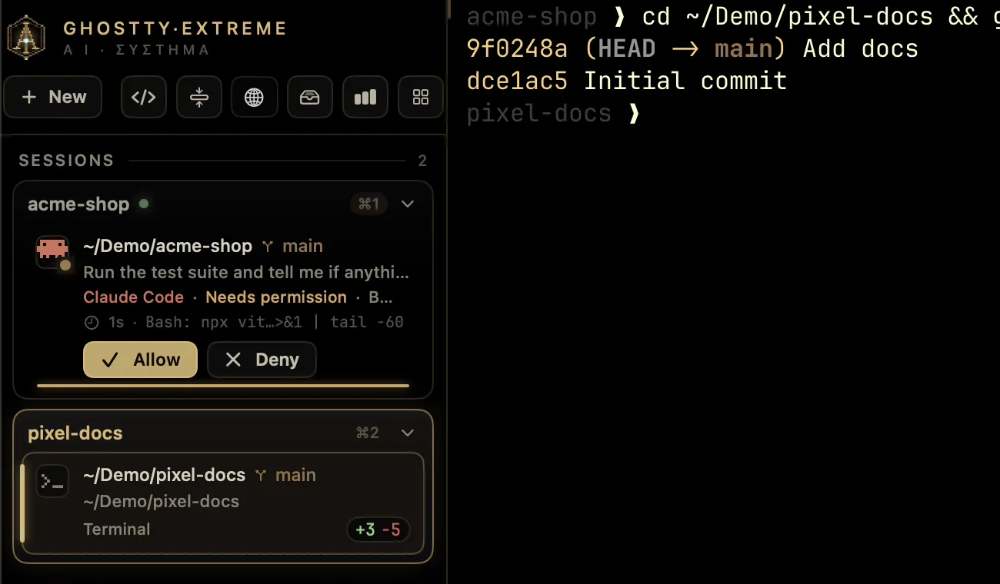
Every agent in every window, on one screen.
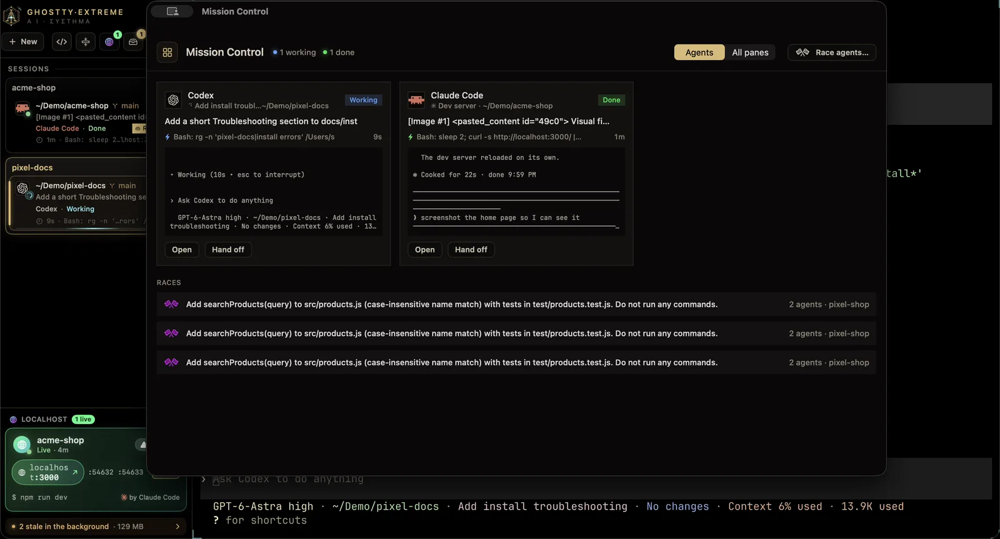
Opens what the agent reads. Types what it writes.
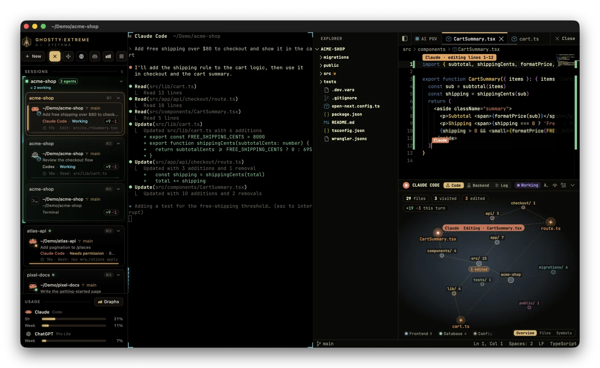
Your project as a star map of what the agent touched.
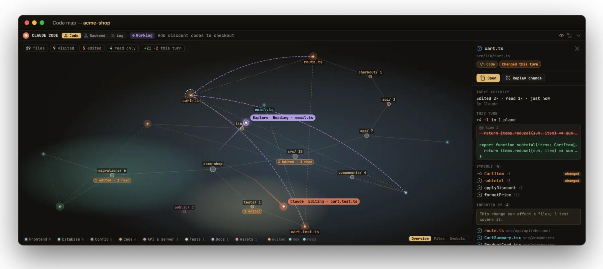
X-ray vision for Cloudflare, Supabase, Vercel and friends.
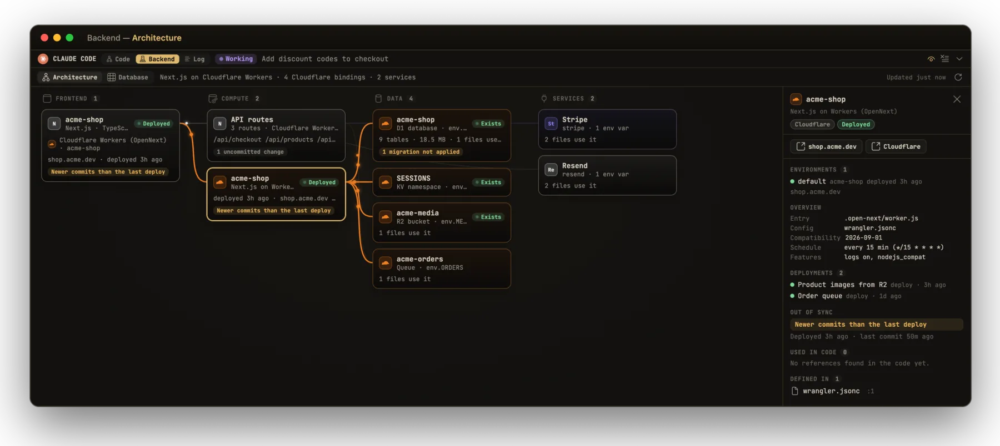
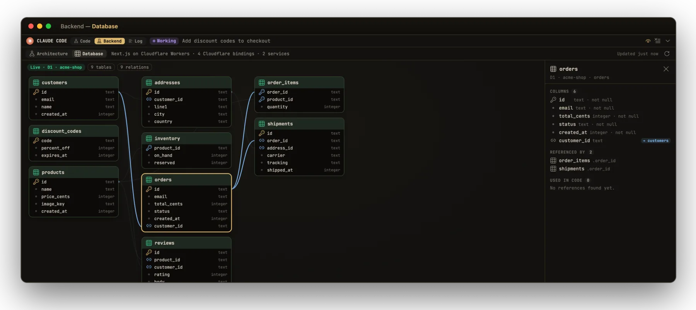
Time, prompts, diffs and tokens — scored per agent, per day.
What one agent learns, the next one knows.
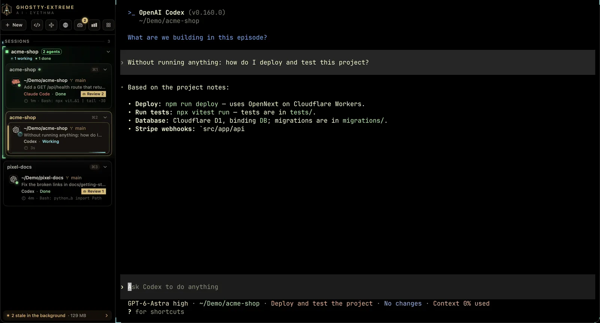
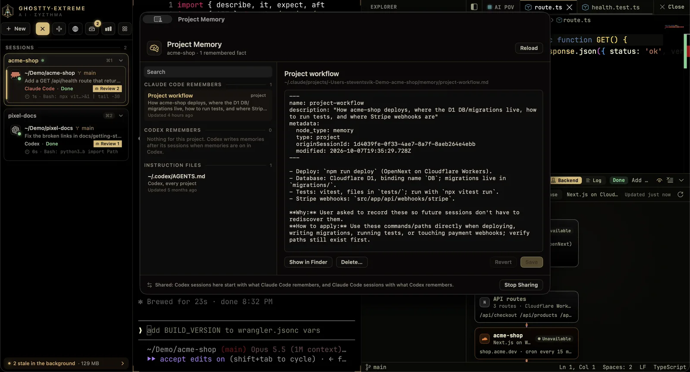
Pass the work — task, diff and notes included.
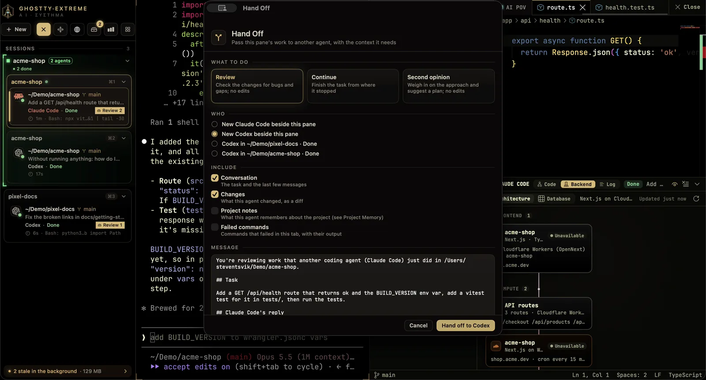
Same quest, several agents. Keep the best run.
Every finished turn lands in an inbox with the full diff.
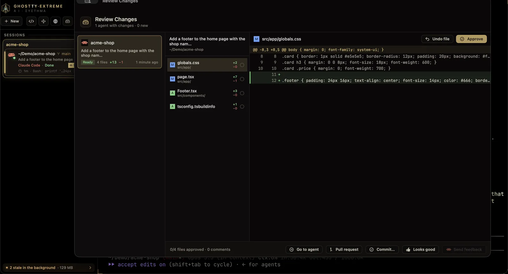
Rewind any turn. The rewind can be rewound.
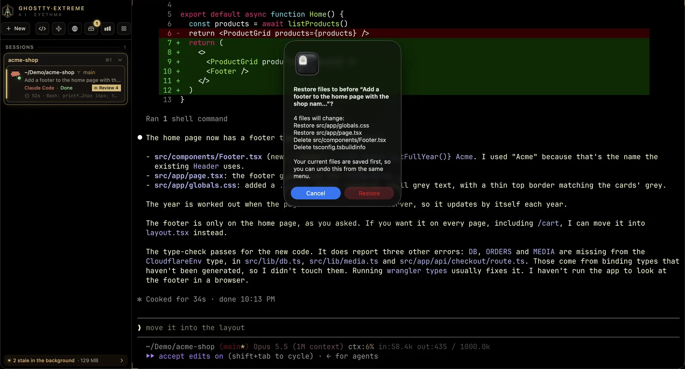
Point at your app. Say the change. Watch it land.
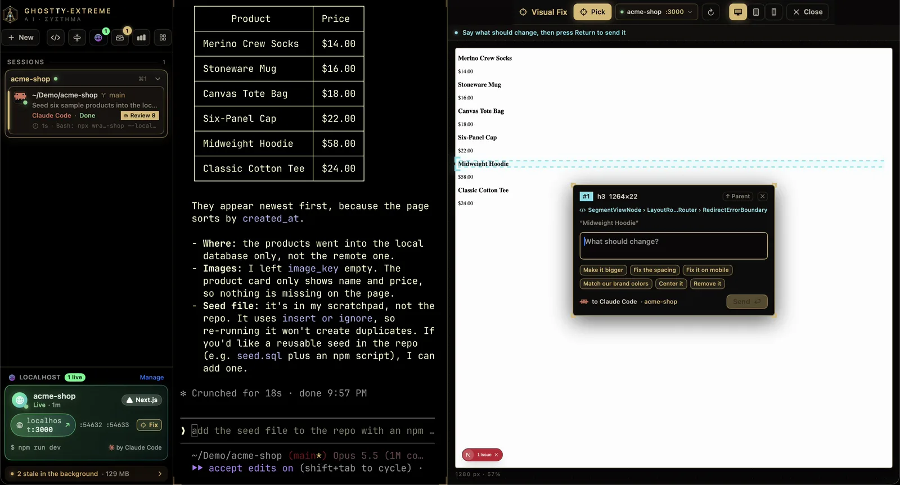
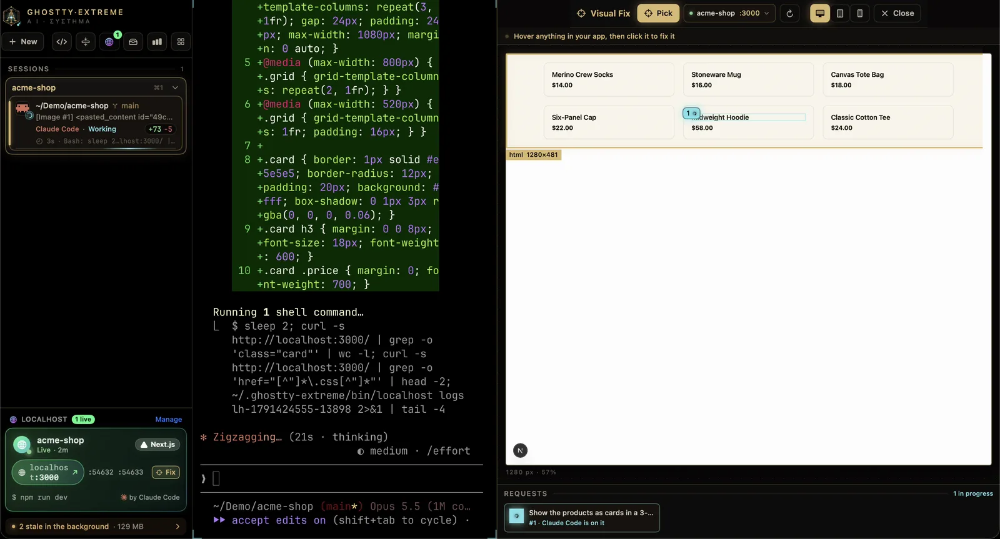
One writes, one reviews, round after round.
Dev servers that outlive the agent that started them.
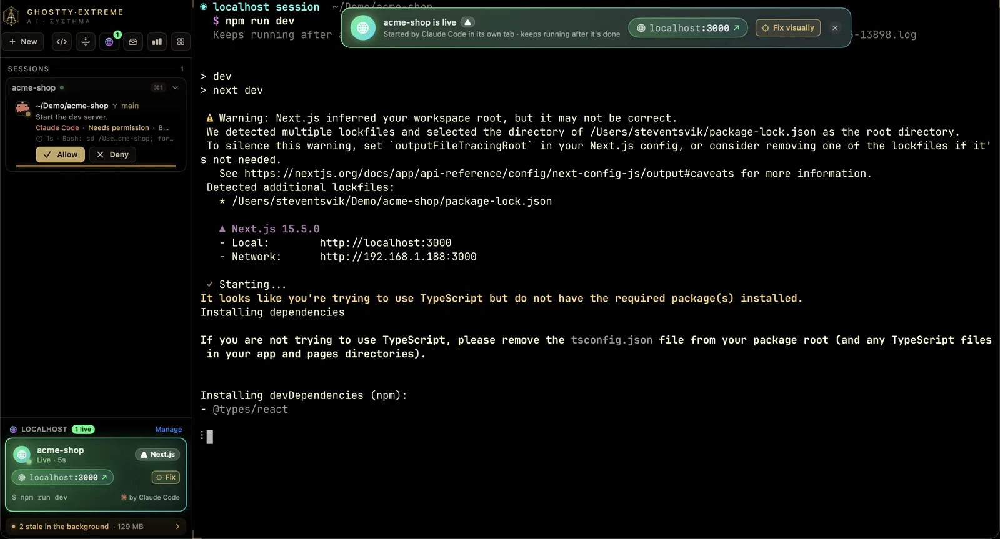
Knows what’s listening — and who’s hogging :3000.
Branch, PR, checks and stashes, one click from the tab.
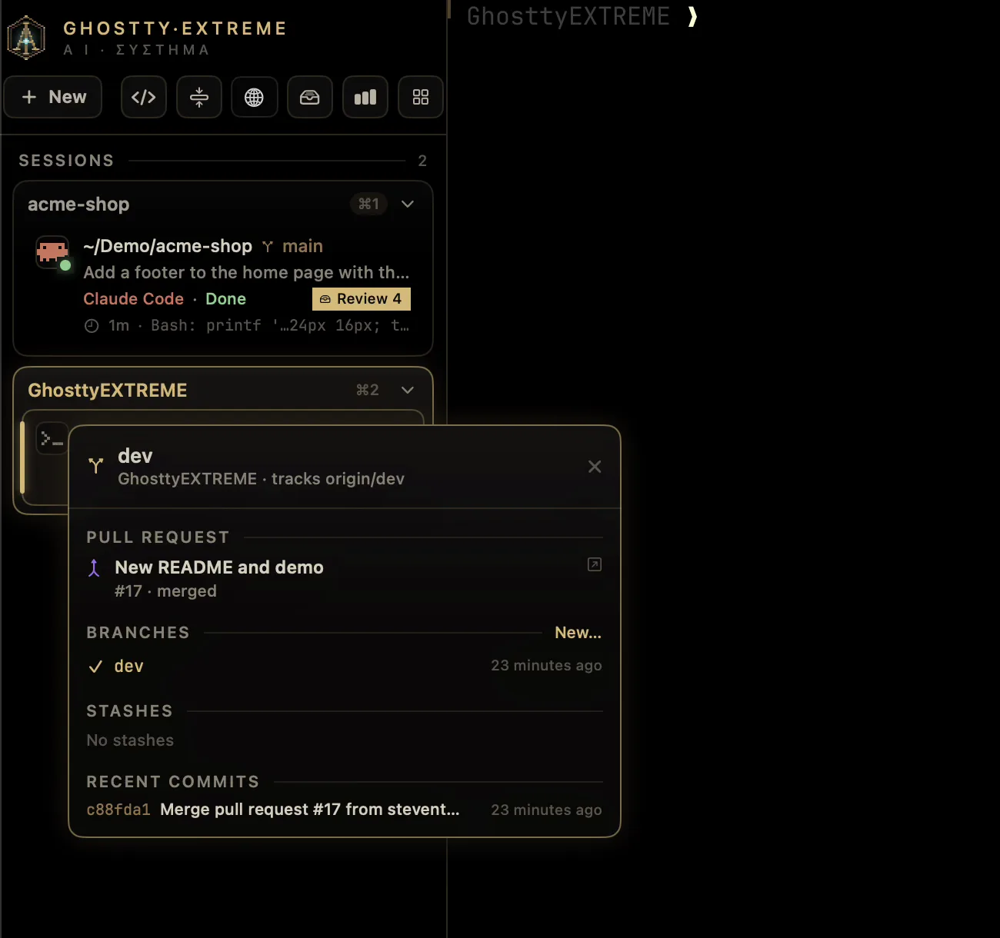
A throwaway container. Your home folder stays home.
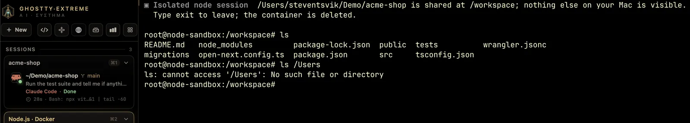
Finds everything left running, and reaps the stale.
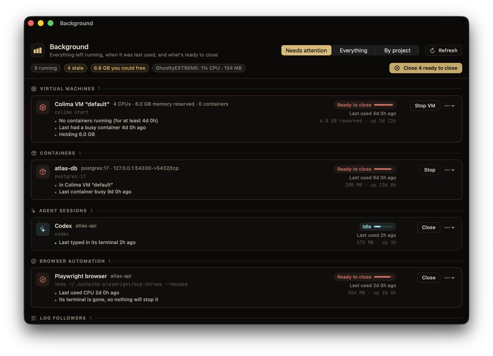
Every command is a block. Failed ones fight back.
Updates itself, then puts every window back.